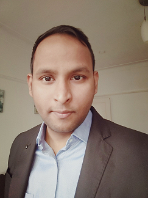
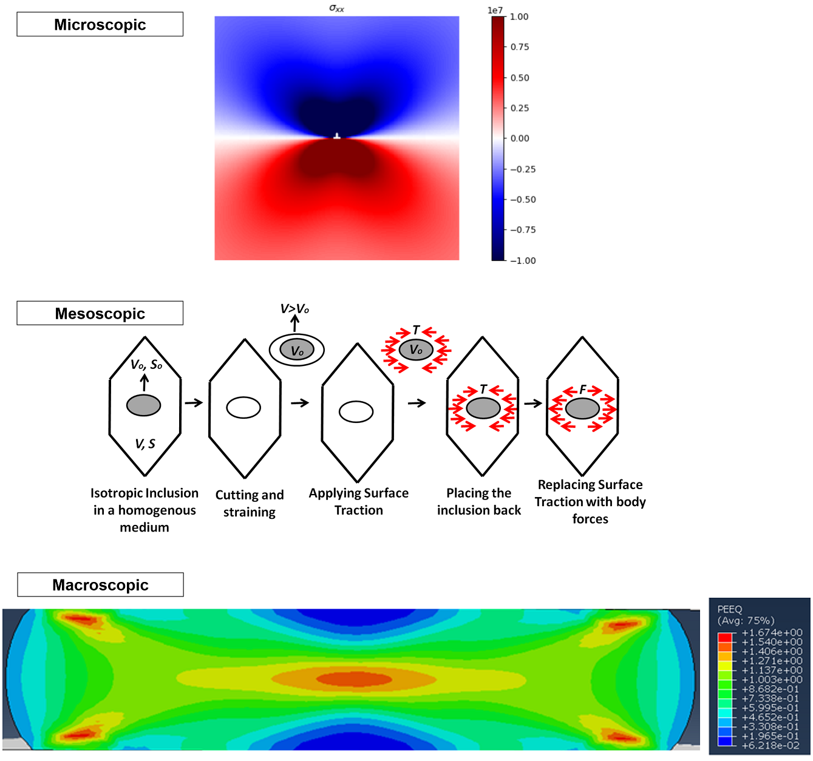
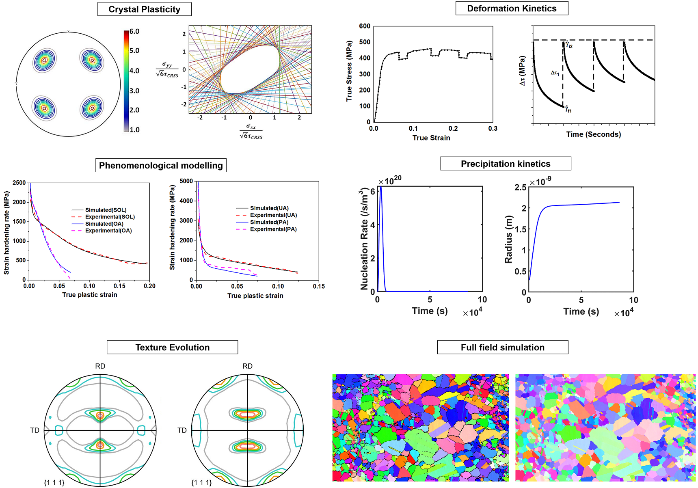

|

|
Hello, I am Sumeet, an Assistant Professor in the Department of Metallurgical and Materials Engineering, Indian Institute of Technology Roorkee. |
Overview
Materials research is unique in the sense that one has to continuously strive to strike a balance between the old and the new. On one hand, continuous improvisations are required to tailor the properties of previously developed materials to meet the present-day requirements. On the other hand, keeping in mind of the future requirements and challenges, physics-based models ranging from microscale to macroscale have to be used to develop new generation materials with exceptional properties. Considering the global call for reducing carbon emission which demands aggressive weight reduction strategies, my research plan will be focussed on lightweight materials with special emphasis on aluminium alloys.
Approach
We have set up the Experimental and Computational Materials lab in IITR where we strive to develop a holistic understanding of the material by working in a hierarchical multiscale framework. We aim to start with a microscopic material model where we want to understand the dislocation interactions with different obstacles and the hardening behaviour at the slip system level. We then scale up our approach to mesoscale where we will employ several computation tools such as crystal plasticity models, internal variable models and damage models. We expect the mesoscale models to act as a link between microscale and macroscale models. Finally, we do another scale up to macroscale where we will implement our understandings from micro and mesoscale in a finite element environment for actual engineering applications.
Research Area
My research interests are in the field of computational plasticity, deformation kinetics analysis using transient mechanical tests, Phenomenological modelling of mechanical properties using internal variable models and mechanical threshold stress model, texture modelling via full field and self-consistent models and numerical modelling of precipitation kinetics. However, I am always open to collaborate and contribute to exciting new fields of research to keep myself in tune with the global developments.
Implementation
One key aspect of our research implementation would be to open up to the outside world and develop a culture where our experimental and modelling knowledge would be shared on an open access platform such as Github. We have created a repository named as "Metal Plasticity analysis" on the Github platform which is regularly updated with our new results and analysis. We welcome comments and criticisms from researchers across the globe which in turn will certainly help us in improving our research methodologies and outlook. The link to our repository can be found in Useful Links section.
Work Culture
We at Experimental and Computational Materials lab believe that our colleagues are our most valuable assets, and they hold the key in achieving our research goals. We encourage inclusive participation of all our team members and strongly discourage any form of discrimination. Although we believe in hierarchical approach in solving our research problems, we strongly discourage any sort of hierarchy in our workspace. All team members are equal contributors and are encouraged to voice their opinions about the working of the lab. We will brief our new team members about some simple yet effective techniques to foster positive team environment in the lab. For example, as mundane it might sound, greeting the team members with a morning "Hello" and acknowledging the team members for their support with "Thanks" goes a long way in setting up positive and vibrant mood in the lab. We will organise several social activities throughout the year so that we get to know each other outside of our workplace. We strongly believe in work-life balance and would be flexible with the working hours. However, to facilitate collaborative working, we expect availability in the core working hours. Please contact me to make arrangements in case you need flexible working hours.